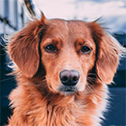

Питомник породистых животных рядом с вашим домом
Животные как дети — им нужны мы.
О питомнике
Наш питомник — не просто дом для животных, а семья из разных пород собак и кошек.
- Лучшие представители своей породы
- Сбалансированый рацион питания питомца
- Ежедневный уход и тренировки
- Веселье, свежий воздух и отличная компания
Наши породы
-
Французский бульдог
 Идеальный вариант городской собаки — они входят в тройку самых популярных собак на планете. Любят короткие прогулки и хорошо поспать.
Идеальный вариант городской собаки — они входят в тройку самых популярных собак на планете. Любят короткие прогулки и хорошо поспать. -
Золотистый ретривер
Добродушные, ориентированные на людей собаки. Они отлично ведут себя с детьми и больными. Могут быть повадырями. -
Чау-чау
 Эти собаки с характером. Они всегда серьезны но временами проявляют характер.
Эти собаки с характером. Они всегда серьезны но временами проявляют характер. -
Пудель
Активные и компанейские собаки. Любят много гулять, обладают отличным чувством юмора.
Отзывы хозяев
татьяна зверева
27.02.2018
Xочу выразить большую благодарность Вам за это чудо – малыша, который появился у нас в семье. Деликатный, милый, ласковый и нежный белоснежный Уник, в которого я влюбилась с первого взгляда, увидев его фотографию на сайте Вашего питомника. Очень умный малыш!

Больше отзывов можно найти у нас в группе ВК